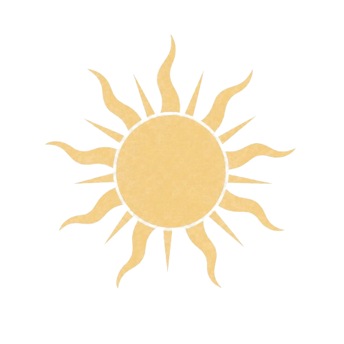

Giới thiệu bản thân
-
•
Họ và tên: Phạm Mạnh Cường
-
•
MSSV: 25021510
-
•
Ngành: Công nghệ Hàng không Vũ trụ
-
•
Định hướng phát triển: Trở thành Kỹ sư Công nghệ Hàng không Vũ trụ chuyên sâu về mô phỏng thuật toán và phát triển hệ thống điều khiển tự hành.
-
•
Mục tiêu của Portfolio: Hệ thống hóa và minh chứng cho những kỹ năng số cùng năng lực ứng dụng công nghệ em đã tích lũy được qua từng tuần học. Đồng thời, đây cũng là một không gian lưu trữ khoa học giúp em dễ dàng quản lý, nhìn nhận lại sự tiến bộ của bản thân và chia sẻ các sản phẩm của mình.
Dự án & Bài tập
Nhấn vào từng bài tập để xem PDF trực tiếp. Sử dụng nút tải về để lưu về máy.
[06 bài tập]


Tổng kết
Nhấn vào các ô chữ để xem thêm thông tin chi tiết
[ Trải nghiệm cá nhân ]
Dự án xây dựng Digital Portfolio cho môn Nhập môn Công nghệ số và Ứng dụng AI đã giúp em tổng hợp trọn vẹn chuỗi 6 bài tập chuyên đề thành một hệ thống tri thức thống nhất. Đối với một sinh viên tại UET, quá trình tự tay đúc kết những thách thức, điểm tâm đắc và kỹ năng cốt lõi tại trang tổng kết không chỉ đơn thuần là hoàn thành một bộ hồ sơ số. Đây chính là tấm gương phản chiếu sự trưởng thành vượt bậc trong tư duy công nghệ, giúp em tự tin định vị bản thân và làm chủ các công cụ số một cách văn minh, trách nhiệm.
[ Kỹ năng tích lũy ]
-
•
Quản trị hệ thống tệp tin và tổ chức thông tin khoa học: Thành thạo việc áp dụng các quy chuẩn đặt tên đồng bộ, thiết lập kiến trúc cây thư mục đa cấp logic để tối ưu hóa không gian lưu trữ và tăng tốc độ truy xuất dữ liệu.
-
•
Kỹ nghệ câu lệnh (Prompt Engineering) nâng cao: Khai thác hiệu quả năng lực của các mô hình ngôn ngữ lớn qua các kỹ thuật đóng vai và chuỗi tư duy (CoT); đồng thời hình thành bộ lọc phản biện để phát hiện và xử lý triệt để hiện tượng ảo tưởng (Hallucination) của AI.
-
•
Cộng tác trực tuyến và Thiết kế trực quan (UX/UI): Làm chủ các hạ tầng làm việc nhóm từ xa, tối ưu hóa quy trình phối hợp liên công cụ; đồng thời ứng dụng tư duy thiết kế UX/UI để tổ chức một không gian nội dung số ngăn nắp, trực quan và dễ tiếp cận.
-
•
Đánh giá thông tin học thuật và Liêm chính số Xây dựng năng lực phân tích, thẩm định tính xác thực của các nguồn tài liệu công nghệ, nắm vững ranh giới giữa hỗ trợ học thuật hợp lý và gian lận để thực hiện trích dẫn minh bạch.
[ Thách thức gặp phải ]
Cái khó nhất với em chắc là việc tìm hiểu cách làm như nào và bắt đầu từ đâu. Mấy ngày đầu em đã phải loay hoay về cách để tạo ra giao diện trang web và chỉnh sửa cho nó cân xứng,và phải suy nghĩ nên viết prompt như nào để AI có thể hỗ trợ mình. Mặt khác, thông tin đổ về rất nhiều, nên em cũng phải lọc xem cái nào chuẩn để có thể đưa vào báo cáo. Và dù là em có làm theo hướng dẫn hay tham khảo những mẫu trang web portfolio khác nhưng em vẫn luôn cố đưa chất riêng của mình vào, vì có lẽ như vậy mới làm nổi bật nên được chữ “cá nhân” trong dự án lần này!!!
[ Lời kết ]
Lời cuối cùng, em muốn gửi một lời cảm ơn thật lòng đến thầy cô. Thú thực là lúc mới đầu em thấy môn này vừa mới vừa ngợp, nhưng nhờ sự định hướng và những bài tập cực kỳ thực tế của thầy cô mà em đã vỡ ra được rất nhiều điều, biết cách biến AI thành trợ lý chứ không để nó làm lười tư duy của mình. Dự án Portfolio này đối với em không chỉ là một bài tập để lấy điểm, mà là một cột mốc ý nghĩa giúp em nhìn rõ sự tiến bộ của bản thân và tự tin hơn rất nhiều trên hành trình học tập sắp tới tại UET. Em xin kính chúc thầy cô luôn nhiều sức khỏe và luôn giữ mãi ngọn lửa nhiệt huyết với tụi sinh viên chúng em!